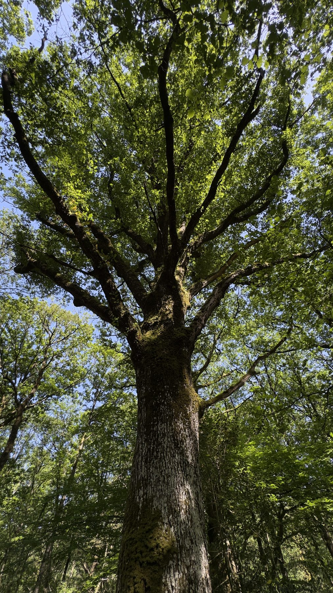
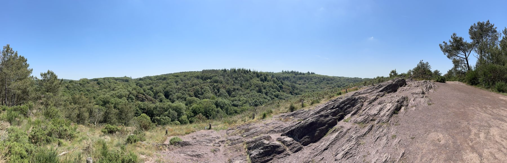
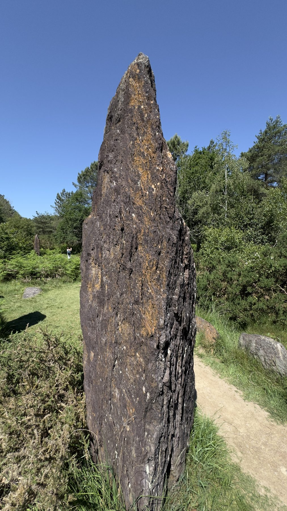

01
Terre
La Terre invite à revenir à l'essentiel, à l'ancrage, à la stabilité et à la présence.
Le corps retrouve ses appuis. La marche devient une manière d'habiter pleinement le lieu et l'instant.

traversée intérieure · brocéliande
Brocéliande ne se visite pas seulement. Elle se traverse.
Pendant plusieurs jours, la forêt devient un espace d'exploration, d'écoute et de reconnexion à soi.
Cette Traversée intérieure s'organise autour des cinq éléments :
Terre · Eau · Feu · Air · Éther
Chaque lieu rencontré devient un support d'expérience. La marche, le silence, les sensations, le souffle, les temps de présence, l'écriture et les partages permettent d'entrer progressivement dans une relation plus fine avec soi-même et avec la nature.

La Terre invite à revenir à l'essentiel, à l'ancrage, à la stabilité et à la présence.
Le corps retrouve ses appuis. La marche devient une manière d'habiter pleinement le lieu et l'instant.

L'Eau nous invite à observer notre manière de circuler, de nous adapter, de retenir ou de laisser passer.
Elle accompagne un travail autour du mouvement, du ressenti et de la fluidité intérieure.

Le Feu interroge notre énergie, notre élan, ce qui nous met en mouvement et ce qui demande parfois à être transformé.
C'est un élément de passage, de décision et de transformation.

L'Air ouvre un espace autour du souffle, du mouvement et de la liberté.
Il nous invite à créer de l'espace, à laisser circuler et à retrouver davantage de légèreté.

L'Éther est l'espace qui relie les autres éléments.
Il invite au silence, à l'écoute et à une présence plus subtile à ce qui se vit.

Certains lieux de Brocéliande font partie intégrante du parcours.
L'Arbre Voyageur, le Jardin aux Moines, le Val sans Retour, l'Hôtié de Viviane, la Fontaine de Barenton, Monteneuf et d'autres lieux rencontrés au fil du séjour ne sont pas de simples étapes touristiques.
Chacun est choisi pour ce qu'il permet d'explorer et de ressentir.
Il ne s'agit pas d'accumuler les visites, mais de prendre le temps d'entrer réellement dans l'expérience du lieu.
Tout au long du séjour, chacun est invité à observer ce qui se présente : sensations corporelles, émotions, résistances, élans, prises de conscience.
Des temps d'écriture personnelle permettent de déposer ce qui a été vécu. Les partages restent toujours libres.
Il n'y a rien à réussir, rien à prouver. L'expérience se construit au rythme de chacun.
La Traversée intérieure est volontairement proposée à un petit nombre de participants afin de préserver la qualité de présence, l'intimité du groupe et le temps nécessaire à chaque expérience.
Écrivez à Sandra pour recevoir les informations, les tarifs et le détail du séjour.